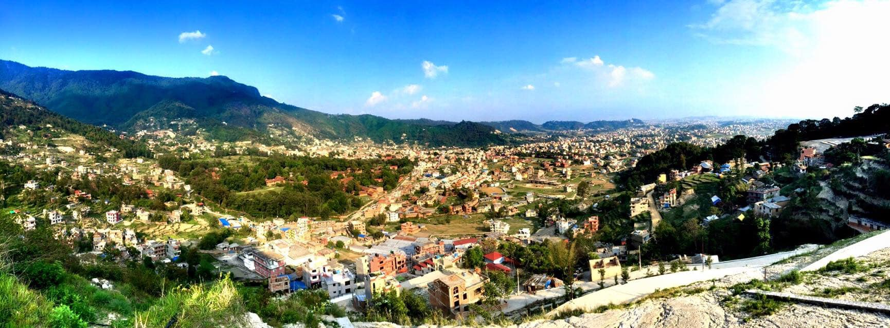

Heloo, my name is Beena Pandey.I am from kathmandu,Nepal.
I did my bachlor in hotel management from International School of
Tourism and Hotel management(IST)
Now i am doing my Masters in IT tourism at Koyoto College of Graduate studies for Informatics(kcg).
I am travelling lover person and i do have interest on social work.I have one small organization
"Skilled hand for needy",which work for those who is homeless, disable and backword in education
due to financial problems.We 11 groupmembers has been working on it since,20114.
Talking about my country Nepal, it very rich in natural resources with lots of hidden herbs and spices on it.
Nepal is also known as temple country in the world.We have different hills,mountains and wild life National Parks.
We do have temples which has been crafted by hand and are very famous in the world.Mount Everest is one of the tallest
mountain in the world.Temples like pashupati nath, shyambu nath(also called monkey Temple),Naranthan are very popular
temples among the hindu countries.Beside these we have many other temples, gumbas,monoments in different part of the nepal
which carries historical roots.Every year thousands of tourist visits nepal just to enjoy the mountain hiking, piligramage,
exploring nature and many more.